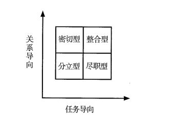

Xing Ce Work · 听课配套讲义
《判断推理：定义判断-单定义 核心错题》
2027公考行测 · 听课配套专属讲义 · 判断推理模块
导师寄语：听课三条纪律
- 严禁只记ABCD：每一道题必须在下方笔记区写明“特征识别”与“排错理由”，写不出理由算没做。
- 结合视频课程：听课时把老师的思维切入点、定位顺序和列式思路记录在笔记区，与自己的错因对照。
- 图片缺失不慌：若题干配图未显示，请查阅原题库 JSON 对应编号，或对照书籍原页码。
本讲义依据《三科易错板块与看课重点（2026-09-26）》优先板块生成，共收录 38 道核心错题；严禁在题面上直接抄写答案选项。
判断推理：定义判断-单定义 核心错题 · 共 38 题
【题目编号/题号】 PD067 (150-2)书本第 150 页
【考点标签】 方式目的
【材料】（无文本材料，见题干配图）
【题干】
机器学习专门研究计算机如何模拟人类的学习行为，以获取新的知识或技能，提高学习效率。通常使用数据或以往的经验，以此优化计算机程序的性能。
根据上述定义，下列不属于机器学习的是：
【选项】
A某公司通过海量数据，不断升级门禁考勤等场景的人脸识别技术的版本，将准确率从85%提高至99%
B科研小组分析人类学习行为，决定让计算机先选用简单的数据再选用复杂的数据依次训练，提升了计算机算法的准确率
C某高校统计学生核酸完成情况，利用算法识别核酸报告截图特定字符，自动生成结果，统计汇总时间由一小时缩短至两分钟
D某AI算法在数据量较少的情况下，通过模拟双方对抗情况获取训练数据，不断提升技巧，最终在网络游戏中达到职业选手水平
听课笔记 / 决策路径：
【题目编号/题号】 PD068 (152-7)书本第 152 页
【考点标签】 单定义-其他句式
【材料】（无文本材料，见题干配图）
【题干】
全球史观研究的是全球而不是某一个国家或地区的历史；关注的是整个人类，而不是局限于西方人或非西方人。其基本特征是：视世界为一个整体，并从宏观的、联系的角度考察人类社会历史演变走向。
根据上述定义，下列没有体现全球史观的是：
【选项】
A游牧生活方式、奴隶制度、封建制度不是与某地区相联系的特殊制度，而是人类社会制度演化的几种可能
B伴随着殖民扩张而来的资本主义生产方式，比封建生产方式要先进得多，更能适应生产力的发展要求
C奥杜威峡谷猿人、克罗马农人和北京人代表了人类演化史上的不同阶段，可以帮助我们更好地了解人类起源
D鸦片战争反映了大英帝国与清帝国这两个文化中心的激烈碰撞及双方中心--边缘观念的转变
听课笔记 / 决策路径：
【题目编号/题号】 PD069 (155-17)书本第 155 页
【考点标签】 方式目的
【材料】（无文本材料，见题干配图）
【题干】
免疫电镜技术是将抗原抗体反应的特异性和电子显微镜的高分辨率相结合，在亚细胞和超微结构水平上对抗原进行定位分析的一种高精确度的技术。
根据上述定义，下列不属于免疫电镜技术的是：
【选项】
A酶的催化作用对其底物的反应可形成不同的电子密度，运用电子显微镜来观察，可确定酶的存在，从而对抗原进行定位
B胶体金与铁蛋白一样具有高电子密度，将沙门氏菌的抗血清与胶体金颗粒结合，可以明确病原物抗原在电镜水平的定位
C铁蛋白通过交联剂与抗体等物质的共价结合，其分辨率高、散射能力强，借助电镜可以准确描述抗原抗体复合物的定位
D微流体检测芯片中的免疫电极体系有镀金基层、导电聚合物层和抗体层，三者自下而上依次贴合，提高检测定位的水平
听课笔记 / 决策路径：
【题目编号/题号】 PD070 (156-19)书本第 156 页
【考点标签】 大前提
【材料】（无文本材料，见题干配图）
【题干】
滑动门时刻：指双方交往过程中，当一方发出寻求理解和支持的信号时，对方及时予以积极回应，从而进一步提高双方关系质量的关键时机。
下列属于滑动门时刻的是：
【选项】
A小袁："今天天气太好了，前天有个朋友说江边的风景很漂亮，花儿也开得很灿烂。"小康："天气确实不错，要不咱们现在就去？"
B妈妈躺在床上看手机，儿子走过来，发现妈妈正在看桂林的视频，就说："哇，桂林真漂亮啊！"妈妈马上说："这不是我们前年一起去时拍的吗？"
C弟弟："每次周末都宅在家里，除了刷手机还是刷手机，无聊死了！"哥哥："那你想干嘛？天天上班本来就很累，周末待在家就是最好的休息。"
D余老外出旅游回来后，一到家就兴冲冲地向女儿展示手机里的风景照。正在电脑上忙乎的女儿抬起头，瞅了一眼："好好好，这些照片拍得太有水平了！"
听课笔记 / 决策路径：
【题目编号/题号】 PD071 (156-20)书本第 156 页
【考点标签】 方式目的
【材料】（无文本材料，见题干配图）
【题干】
起兴是中国古典诗歌的一种文学表现手法，先言他物以引起所咏之辞，一般用于诗文的开头以加强语言表现力。
根据上述定义，下列诗句中没有运用起兴的是：
【选项】
A翩翩堂前燕，冬藏夏来见。兄弟两三人，流宕在他县
B老骥伏枥，志在千里。烈士暮年，壮心不已
C泻水置平地，各自东西南北流。人生亦有命，安能行叹复坐愁
D毕竟西湖六月中，风光不与四时同。接天莲叶无穷碧，映日荷花别样红
听课笔记 / 决策路径：
【题目编号/题号】 PD072 (162-38)书本第 162 页
【考点标签】 单定义-其他句式
【材料】（无文本材料，见题干配图）
【题干】
流行病学现状研究是流行病学描述性研究的一个主要内容，主要是对特定时点（或期间）和特定范围内人群中的有关变量（因素）与疾病或健康状况的关系进行描述与分析的一项研究，因此也称横断面研究。
根据上述定义，下列不属于横断面研究的是：
【选项】
A某团队在某地集中爆发禽流感之后，分析了该病的起因、发病率、死亡率等指标
B某团队调查了200例60岁以上的冠心病患者，研究这些患者血液中胆固醇含量与冠心病之间的关系
C某团队研究了从1975年至1995年从事油漆镭盘与从事一般工作的工人骨肿瘤的发病率情况
D某团队通过分析不同的埃博拉病毒毒株研究了该病毒的分型、传播途径、生物学特性和致病原理
听课笔记 / 决策路径：
【题目编号/题号】 PD073 (163-41)书本第 163 页
【考点标签】 单定义-其他句式
【材料】（无文本材料，见题干配图）
【题干】
投射效应是一种认为自己具有某种特性，他人也一定会有与自己相同的特性，进而把自己的感情、意志、特性等投射到他人身上并强加于他人的心理现象。
根据上述定义，下列体现了投射效应的是：
【选项】
A一个经常帮助别人的人会认为自己遇到困难时，别人也会伸出援手
B每次在足球比赛结束之后，就会有人声称自己早就预测到某队会赢
C小王喜欢吃零食，他经常买很多零食带到单位和同样喜欢吃零食的同事分享
D小张喜欢读历史书，经常给孩子讲历史书上的故事，慢慢地孩子也喜欢上了历史
听课笔记 / 决策路径：
【题目编号/题号】 PD074 (164-44)书本第 164 页
【考点标签】 大前提
【材料】（无文本材料，见题干配图）
【题干】
职场义警是指认为自己在没有正式授权的情况下，能够监控周围环境中是否存在违反公司规范的迹象，并在自认为适当或合理的时候对感知到的违规同事进行直接或间接处罚的人。
根据上述定义，下列属于职场义警的是：
【选项】
A小张认为公司强制加班的行为违反了劳动法，于是向公司主管部门进行实名举报
B戴红袖标的居委会王阿姨在斑马线义务执勤时，对乱闯红灯的行人进行口头批评
C有同事利用上班时间闲聊，老周看不过去，瞅准机会找到这位同事进行批评教育
D保卫科小刘专门就公司员工安全意识弱现象向领导进行汇报，建议领导通报批评
听课笔记 / 决策路径：
【题目编号/题号】 PD075 (164-45)书本第 164 页
【考点标签】 方式目的
【材料】（无文本材料，见题干配图）
【题干】
演出，指演出单位或个人在特定的时间、特定的环境下所举办的文艺表演活动，把戏曲、舞蹈、曲艺、杂技等才艺在观众面前表演出来。详细地说就是演员通过某种艺术表演形式和服装道具、舞美、灯光、音响的特殊艺术效果，现场把舞台艺术品展现给观众的过程。
根据上述定义，以下属于演出的是：
【选项】
A某艺术剧院在话剧《雷雨》每次正式公演前，都要进行一次彩排
B某演员在水下跳舞的视频，经过多次剪辑后在电视台播放
C某人在和朋友聚餐时利用餐桌上的餐具为大家即兴表演一个魔术
D某高校舞蹈学院举办毕业生汇报表演时正赶上期末考试，观众寥寥
听课笔记 / 决策路径：
【题目编号/题号】 PD076 (165-47)书本第 165 页
【考点标签】 方式目的
【材料】（无文本材料，见题干配图）
【题干】
整合营销传播是将各种传播方式有机结合起来的一种系统的传播活动。整合营销传播强调以消费者为中心，从消费者的需求和角度出发。
根据上述定义，下列情形属于整合营销传播的是：
【选项】
A公司运用线上和线下相结合的方式销售一种网红产品
B公司根据老年消费者的实际情况采取了线下产品宣传
C公司同时使用报纸、电视、网络等多种方式对产品进行宣传
D公司根据目标消费者的属性综合运用网络和新媒体投放广告
听课笔记 / 决策路径：
【题目编号/题号】 PD077 (166-50)书本第 166 页
【考点标签】 大前提
【材料】（无文本材料，见题干配图）
【题干】
正常化偏见，就是指大家对某个事物感到习惯后，就会产生安于现状、不愿意再去尝试新事物的惰性心理。
根据上述定义，下列不属于正常化偏见的是：
【选项】
A某些喜欢看西医的病人排斥看中医
B上了年纪的老年人更倾向去菜市场买菜
C只要吃外卖，小张就只使用某平台下单
D当人们试吃样品满意后更有可能进店消费
听课笔记 / 决策路径：
【题目编号/题号】 PD078 (166-51)书本第 166 页
【考点标签】 大前提
【材料】（无文本材料，见题干配图）
【题干】
审美意象是用来表达某种抽象的观念或者哲理的艺术形象，它是艺术家在构思过程中，将自己的审美情感、审美认识与客观的事物相融合，并以一定的艺术表达方式呈现出来的内心视像。
根据上述定义，下列不属于审美意象的是：
【选项】
A鲁迅作品《祝福》中的人物"祥林嫂"
B"采菊东篱下，悠然见南山"中的"南山"
C漫画作品《三毛流浪记》中的人物"三毛"
D日常语句"太阳出来了，该起床了"中的"太阳"
听课笔记 / 决策路径：
【题目编号/题号】 PD079 (167-54)书本第 167 页
【考点标签】 方式目的
【材料】（无文本材料，见题干配图）
【题干】
积极独处是个体主动选择与他人的交际分离，选择自我自由并投入到有意义的、愉快的活动中，从而产生的一种内在积极体验。
根据上述定义，下列属于积极独处的是：
【选项】
A小孙睡眠质量不好，外出工作时一般都不和同事一起住
B小钱已经锁定了晚上的演唱会门票，谢绝了同事下班后聚餐的邀请
C为了准备研究生入学考试，小赵几乎不参加社交活动，他感到很充实
D小周适应不了职场人际关系，辞职后不愿出去找工作，整日在家刷视频
听课笔记 / 决策路径：
【题目编号/题号】 PD080 (168-58)书本第 168 页
【考点标签】 单定义-其他句式
【材料】（无文本材料，见题干配图）
【题干】
适应性绩效是指个体应对、响应和支持变化的行为表现，具有一定动态发展性，它对于个人、团队和企业的创新以及维持企业在动态变化的环境中持续高效运作均具有重要意义。
根据上述定义，下列属于适应性绩效的是：
【选项】
A企业为适应市场环境，加速剥离非核心业务，以维持主营业务的竞争力
B为响应绿色低碳生产要求，公司董事会决定关闭高污染高耗能生产项目
C50多岁的赵老师对人工智能技术产生了很大兴趣，专门学习了有关课程
D为了适应公司海外市场的快速拓展，销售骨干小刘开始学起了第二外语
听课笔记 / 决策路径：
【题目编号/题号】 PD081 (171-67)书本第 171 页
【考点标签】 方式目的
【材料】（无文本材料，见题干配图）
【题干】
心理护理是指在护理过程中，护士发现了影响患者治疗及康复的心理问题后，运用心理学的理论作指导，通过自身的语言、态度和行为等，或通过改善环境（包括人文环境及物理环境）去影响或调整患者的心理状态和行为，进而帮助患者康复的护理方法。
根据上述定义，下列没有体现心理护理的是：
【选项】
A护士协助医生让青少年患者进行心理量表的测试，进而评估患者心理问题的类型
B护士发现患儿害怕用药后，在更换伤口敷料时动作轻柔、耐心细致，使患儿不再抵触换药
C护士建议家属及时安抚患者的消极情绪并多加陪伴，以增强患者战胜疾病的信心
D针对患者手术前的紧张情绪，护士教会患者放松的技巧，帮助患者正确对待手术
听课笔记 / 决策路径：
【题目编号/题号】 PD082 (172-1)书本第 172 页
【考点标签】 单定义-其他句式
【材料】（无文本材料，见题干配图）
【题干】
参考价格效应是指商品的价格相对于消费者认知的其他替代商品越高，消费者对价格就越敏感。反之，消费者则对价格不敏感。
根据上述定义，下列体现了参考价格效应的是（ ）。
【选项】
A消费者购买了一件原价为2300元、现价为999元的衣服时，感到了一种在价格促销中省钱的喜悦
B某高端电脑的价格高出同类产品20%以上，但消费者却很愿意购买，这是因为担心普通产品的性能无法令人满意
C百货公司一楼大多是高档化妆品柜台，价格之高让普通人难以接受，但在看过这些几乎全是千元起步的价目牌后，消费者反而觉得二楼售价500元一件的衬衫也不贵
D杂货店老板经常会将价格较低但毛利率较高的大众品牌放在顾客第一眼看不到的地方，而将价格较高的品牌放在显眼的位置，这样顾客看到大众品牌的价格时就会觉得便宜而购买
听课笔记 / 决策路径：
【题目编号/题号】 PD083 (172-70)书本第 172 页
【考点标签】 单定义-其他句式
【材料】（无文本材料，见题干配图）
【题干】
信息影响法则指的是人们往往会对极为熟悉的、形象生动的、特点鲜明的信息产生积极的心理反应，不仅表现得非常敏感，而且容易印象深刻。
根据上述定义，下列没有反映信息影响法则的是：
【选项】
A小郑在电视中看到某洗发水广告，他觉得葫芦形产品包装很可爱，于是去超市买了这款洗发水
B小林最近加班多，觉得颈部不适，同事推荐给他一款配乐颈椎按摩仪，他试用了一下，觉得效果不错
C许多小朋友爱看某款动画片，当商场里出现该动画片里相关人物的玩偶时，小朋友们都会特别兴奋
D小李在阅读一本推理小说时，发现作者的写法和自己之前看过的小说完全不同，因此他产生了更大的兴趣
听课笔记 / 决策路径：
【题目编号/题号】 PD084 (173-2)书本第 173 页
【考点标签】 拆词
【材料】（无文本材料，见题干配图）
【题干】
乡情治理是指乡情作用于基层社会治理主体和治理体系，在基层社会的意见整合、利益协调、矛盾化解、服务供给等治理过程中发挥重要作用的一种治理形态。"乡情"是一种基于地域以及附着在经济、社会、文化纽带上的特殊情感，体现为认同感、归属感、荣誉感及在此基础上的回馈意愿和公共精神。乡情治理的核心是存在一个由情感和认同构筑的场域，这个场域通过一些微观机制影响个体动机和群体行为，从而影响社会治理体系和过程。
根据上述定义，下列属于乡情治理的是：
【选项】
A顺德人都以顺德是"世界美食之都"而自豪
B敢拼会赢的精神一直激励着闽南人勇闯南洋
C海外华侨华人一直有着爱国爱乡的光荣传统
D北岸乡贤成立妈祖慈善基金会服务当地桑梓
听课笔记 / 决策路径：
【题目编号/题号】 PD085 (173-3)书本第 173 页
【考点标签】 方式目的
【材料】（无文本材料，见题干配图）
【题干】
数字意境：指通过数字技术赋能将优秀传统文化以沉浸式的艺术形式进行创新表达，凸显视觉效果呈现，以展现其文化韵味和审美意境。
下列属于数字意境的是：
【选项】
A某电视台文化节目中，大学生们来到文化古迹现场，与考古专家互动，在诵读、观察、探究中加深对中华传统文化的理解
B某景区排练的舞蹈节目中，以当地石窟为真实背景，利用三维动画技术复原了壁画中飞天与金刚的舞蹈，使静止的文化符号变成了动感的形象
C某艺术研究院和多家企业合作，对古代编钟复制件进行高精细度的音源采集，最终实现对这一传统瑰宝的数字化复原
D某博物馆从古代名画《千里江山图》《百花图卷》中选取"意象"元素，实景搭建了沉浸式体验展厅，观众犹如身临其境
听课笔记 / 决策路径：
【题目编号/题号】 PD086 (174-5)书本第 174 页
【考点标签】 大前提
【材料】（无文本材料，见题干配图）
【题干】
"舍本求末"基模描述了当系统出现棘手问题时，人们往往急于求成，采取短期的应急措施，反而延误了长期的根本解决问题方案的系统行为模式。
根据上述定义，下列属于"舍本求末"基模的是：
【选项】
A两家公司为了争夺更高的市场占有率，均采用了降价销售的策略，结果陷入了竞相压价的恶性循环，导致双方都严重亏损
B某奶茶公司一度发展为行业龙头，几年后进入瓶颈期。为谋求出路，公司高层就是否裁撤门店发生严重内斗，导致业绩断崖式下滑
C某高新技术公司产品去年的市场占有额有所下降，为挽救这一态势，该公司把重点放在了改进现有产品来继续占有市场，放弃了研发新产品的计划
D两家煤化厂合作共同开发当地的煤炭资源，几年内均赚得盆满钵满。为提高收益水平，两家企业均加大了煤炭开采力度，导致有限的煤炭资源在短时间内消耗殆尽
听课笔记 / 决策路径：
【题目编号/题号】 PD087 (175-8)书本第 175 页
【考点标签】 方式目的
【材料】（无文本材料，见题干配图）
【题干】
暗示效应是指在无对抗的条件下，用含蓄、抽象诱导的间接方法对人们的心理和行为产生影响，从而诱导人们按照一定的方式去行动或接受一定的意见，使其思想、行为与暗示者期望的目标相符合。
根据上述定义，下列体现暗示效应的是：
【选项】
A"凤雏"庞统率军经过落凤坡，得知坡名，惊呼："天绝我也！"最终被乱箭射死于"落凤坡"上
B张飞在长坂桥独自迎战曹操大军时大吼："我乃燕人张翼德也！谁敢与我决一死战"，吓得曹军落荒而逃
C貂蝉为让吕布除去董卓，对吕布哭诉被董卓霸占的痛苦及对吕布的思念，吕布得知气愤不已，最终将董卓杀掉
D岳母在岳飞幼年时在其背上刺下"精忠报国"四个字，岳飞长大后果然不负母亲期望，成为一代精忠报国的抗金名将
听课笔记 / 决策路径：
【题目编号/题号】 PD088 (175-10)书本第 175 页
【考点标签】 方式目的
【材料】（无文本材料，见题干配图）
【题干】
医共体是指一个区域内的医院与其他医疗服务机构或组织联系在一起，重新组合构建的一个整体性的全新医疗组织架构，它运用的是核心医院的家族式管理方式。以大家长身份来整合与统筹集团内的医疗资源、同时重建集团内部的管理架构、组织系统和医疗服务的体系以及相互之间的组织构成等。
根据上述定义，下列选项属于医共体的是：
【选项】
A若干市属医院与社区卫生服务中心联合起来为居民提供健康服务，解决百姓看病难的问题
B全国著名的皮肤病院和研究所的知名专家们利用周末联合开展义诊，为百姓提供咨询服务
C某医药公司配合"基层呼吸疾病防治联盟"，以县为单位建立"县城肺炎防控能力指导中心"
D以区级医院为龙头成立医疗管理委员会，建立卫生服务体系，实现区乡两级医疗卫生资源共享
听课笔记 / 决策路径：
【题目编号/题号】 PD089 (177-14)书本第 177 页
【考点标签】 方式目的
【材料】（无文本材料，见题干配图）
【题干】
除法报价策略是一种价格分解术，以商品的数量或使用时间等概念为除数，以商品价格为被除数，得出一种数字很小的价格，使买主对本来不低的价格产生一种便宜、低廉的感觉。
根据上述定义，下列不属于除法报价策略的是：
【选项】
A某款笔记本电脑原价5268元，若分12期付款，每月只需439元即可入手
B成人游泳班每节课仅需100元，10节课程结束后就可以学会蛙泳和仰泳
C某款电动汽车售价40万元，高于同类产品，但车主每月可抵扣200元充电费用
D一份液化气保险每年保费为365元，相当于每天只交1元，如遇事故最高获得1万元理赔
听课笔记 / 决策路径：
【题目编号/题号】 PD090 (177-15)书本第 177 页
【考点标签】 大前提、主客体
【材料】（无文本材料，见题干配图）
【题干】
代际责任：指在不超出自身能力的前提下，相邻两代人的一方向另一方主动提供经济帮扶、生活照顾、健康保障、精神抚慰等各种支持的行为。
下列不属于代际责任的是：
【选项】
A苏女士把父母接到身边后，忙乎了一个多月，带着父母熟悉小区健身器材，到社区老年活动中心打牌下棋，在公园找人聊天，终于帮他们重新找到了"组织"
B邵先生和妻子一直在城里忙于打拼，女儿正在读小学。每到寒暑假，邵先生的父母都会专程赶到城里，把孙女接回农村老家痛痛快快地玩上整个假期
C罗奶奶像无数为孩子婚事发愁的长辈一样，每到周末就去附近公园的相亲角浏览展板上的照片、简历，觉得合适的就记下基本情况、电话号码。虽然快三十岁的孙女根本不着急，她却一直乐此不疲
D毛先生喜欢第一时间把遇到的趣事分享到家族微信群，却很少得到期待的回应，一怒之下退了群。后来，儿子又把他请回，还邀约了几位有同样爱好的长辈，群里逐渐热闹起来，他也时不时点赞或评论几句
听课笔记 / 决策路径：
【题目编号/题号】 PD091 (177-16)书本第 177 页
【考点标签】 方式目的
【材料】（无文本材料，见题干配图）
【题干】
载损鉴定是指船方为了明确所承运的货物是否发生了残损，以及残损责任是否属于船方，而向商检机构申请在其卸货过程中检查货物情况，给予公正的鉴定。
根据上述定义，下列属于载损鉴定范畴的是：
【选项】
A甲船向商检机构申请检查船舶卸货前舱口、风筒的封盖和封识情况，以鉴定货物受损的原因
B乙船向商检机构申请检查舱内货物清单是否与报关清单一致，鉴定货物是否完整
C丙船向商检机构申请对比装船储罐前检尺及储罐后检尺，以计算输油软管破裂造成的油品泄漏量
D丁船与戊船相撞后，向商检机构申请检查船体的故障原因，评估船体的技术状况
听课笔记 / 决策路径：
【题目编号/题号】 PD092 (178-17)书本第 178 页
【考点标签】 方式目的
【材料】（无文本材料，见题干配图）
【题干】
同一认定是指侦查中具有专门知识的人或了解客体特征的人，通过比较先后出现的客体的特征而对客体是否同一做出的判断。这里所说的客体是指与案件有关联的人或物。
根据上述定义，下列属于同一认定的是：
【选项】
A通过对手机中所存储的信息进行检查，确定其是否为报案人所丢失的手机
B通过对犯罪现场提取的DNA信息与DNA信息库进行比对，查找犯罪嫌疑人
C通过对走私案中所缴获的走私物品进行多次鉴定，认定其是否为国外某厂家所生产
D通过对犯罪嫌疑人车上所收缴的各类物品进行检验，判断其是否属于违禁物品
听课笔记 / 决策路径：
【题目编号/题号】 PD093 (178-18)书本第 178 页
【考点标签】 大前提
【材料】（无文本材料，见题干配图）
【题干】
功能性自治是指在解决问题的过程中，某些子目标的达成刺激当事人产生进一步发展的动力，不受最初设定问题的限制，诱发思维进入更高级发展阶段的过程。
根据上述定义，下列属于功能性自治的是：
【选项】
A某婴儿想要触碰稍远处的玩具，在此过程中学会了控制手臂，之后他根据有时能触碰到、有时不能触碰到的体验，逐渐建立了"距离"的概念
B某学生立志获得学校跨栏比赛的冠军，经过刻苦练习终于实现目标，这赋予了他更大的勇气和自信，此后他更加努力并入选国家队
C某医学生为掌握神经解剖技术大量练习，在控制手部精细操作的过程中，他意识到自己的兴趣在雕塑，于是下定决心转入艺术系
D某工程师退休之后回想人生，意识到自己年轻时立下的职业理想已实现，但有些人生目标尚未实现，因而生发出许多感慨
听课笔记 / 决策路径：
【题目编号/题号】 PD094 (178-19)书本第 178 页
【考点标签】 单定义-其他句式
【材料】（无文本材料，见题干配图）
【题干】
《中国共产党纪律处分条例》规定，主动交代本人应当受到党纪处分的问题，可以从轻或者减轻处分。这里所称的主动交代主要包括两种情况：一是涉嫌违纪的党员在组织谈话函询、初步核实前向有关组织交代自己的问题。二是在谈话函询、初步核实和立案审查期间交代组织未掌握的问题。
假定下列人员均受该条例约束，根据上述定义，下列属于主动交代的是：
【选项】
A甲在参加违纪违法典型案例警示教育大会后，主动找到单位领导反映同事的违纪问题
B乙在组织对其进行廉政谈话时，组织举证一项他才承认一项，对未涉及的情况闭口不谈
C丙在纪委对其个人财产有关事项进行函询时，将其利用职权为自己和他人谋利的情况如实交代
D丁在纪委对其立案审查期间，面对确凿的证据，交代了之前没有交代的收受大额礼金的问题
听课笔记 / 决策路径：
【题目编号/题号】 PD095 (179-20)书本第 179 页
【考点标签】 方式目的
【材料】（无文本材料，见题干配图）
【题干】
雪球抽样样本是一种非随机抽样，指为了后续研究需要，已确定的研究对象需协助调查者指认与自身相似的其他对象进而保证本调查研究有足够数量的样本。
根据上述定义，下列最适合作为雪球抽样样本的是：
听课笔记 / 决策路径：
【题目编号/题号】 PD096 (179-22)书本第 179 页
【考点标签】 拆词
【材料】（无文本材料，见题干配图）
【题干】
水体自净是指受污染的水体，在物理、化学、生物等作用下，污染物浓度逐渐降低，经一段时间后自行恢复到受污染前的状态。
根据上述定义，下列不属于水体自净的是：
【选项】
A污水或污染物被排入水体后，悬浮体、胶体和溶解性污染物因混合稀释而逐渐降低浓度
B当受污染的水体中含有可溶的二价铁时，向水体中加入化学制剂，将其转化为不溶性的三价铁而沉淀到水底
C水体中的硅、铝氧化物胶体或蒙脱土、高岭土一类胶体物质，能吸附各种阳离子或阴离子而与污染物凝聚并沉淀
D悬浮和溶解于水体中的有机污染物被水体中微生物利用，进一步分解为二氧化碳和水
听课笔记 / 决策路径：
【题目编号/题号】 PD097 (180-24)书本第 180 页
【考点标签】 拆词
【材料】（无文本材料，见题干配图）
【题干】
达人探店：指网络博主为了打通商品与消费者的信息隔膜，以直播、视频等形式展示真实的产品体验和消费场景，并在网络平台上发布个人评价的行为。
下列属于达人探店的是：
【选项】
A高先生是网上小有名气的食评家，直播时常常让老板和大厨当场下不了台，被网友称为"六亲不认"，收获了大量粉丝，很多餐馆因此改进了菜品和服务
B某知名穿搭博主经常购买各品牌的当季新款时装，在各种社交媒体发布变装视频，其穿搭风格被一些网友模仿
C健身教练石先生录制了健身教学网课，为提升课程销量，在社交平台上发布了包含大量学员体验及评价的推介视频
D带爸妈外出游玩时，胡女士有时会对当地景点的适老性设施情况进行评价，拍摄攻略短视频，被网民赞誉为史上最靠谱的老年旅游活地图
听课笔记 / 决策路径：
【题目编号/题号】 PD098 (180-25)书本第 180 页
【考点标签】 主客体
【材料】（无文本材料，见题干配图）
【题干】
涉农执法：指有关行政执法部门对涉及"三农"的生产经营活动的各种问题开展的执法活动。
下列不属于涉农执法的是：
【选项】
A某食品工厂生产的饮料经抽样检测，有多项不合格，执法人员对当事人做出没收违法所得并罚款的行政处罚
B执法大队经调查取证，查实辖区内的某农贸经营部销售假农药，依法责令其召回已售出的该农药，并对当事人做出行政处罚
C在对某乡村猪肉交易市场进行执法检查时，发现，郑某售卖的猪肉没有检验标识，依法对他进行了处罚
D种瓜大户老刘为了扩大销路，在瓜园门口挂上了"香瓜开园啦"的条幅。邻居张律师说，他未经批准打广告，不合法，建议他撤下横幅
听课笔记 / 决策路径：
【题目编号/题号】 PD099 (181-27)书本第 181 页
【考点标签】 单定义-其他句式
【材料】（无文本材料，见题干配图）
【题干】
多重趋避式冲突是指人们面对着两个或两个以上的目标，而目标又各自分别具有吸引和排斥两方面的作用，人们无法简单地选择一个目标而回避或拒绝另一个目标时的矛盾心态。
根据上述定义，下列体现多重趋避式冲突的是：
【选项】
A张女士在二胎问题上犹豫不决，既想儿女双全，又怕无力抚养
B周女士有一次难得的外省培训机会，可又放心不下家中年幼的孩子
C王先生有一笔闲置资金，用于炒股担心风险大，用于储蓄又嫌收益低
D李同学在收到研究生录取通知书的同时，又得到了心仪公司的入职邀请
听课笔记 / 决策路径：
【题目编号/题号】 PD100 (182-30)书本第 182 页
【考点标签】 方式目的
【材料】（无文本材料，见题干配图）
【题干】
海洋地球物理调查是指利用各种物理学方法和仪器，测量海底地球物理的性质及其变化特征，从而得出海底地质构造或矿产分布的调查方法。
根据上述定义，下列属于海洋地球物理调查的是：
【选项】
A将重力仪安放在船上进行观测，以确定海底地壳各种岩层质量分布的不均匀性
B用深海钻探法从海底采集富钴结壳矿样品，分析其中锰、铁氧化物成分及氧化程度
C用硝酸银滴定氯化物的方法检测海底沉积物的成分，以确定海底矿产资源的情况
D用抛弃式探温仪测定海水温度，计算出海洋平均温度，分析近60年来海洋变暖速率
听课笔记 / 决策路径：
【题目编号/题号】 PD101 (182-31)书本第 182 页
【考点标签】 大前提
【材料】（无文本材料，见题干配图）
【题干】
温情执法：指执法人员在依法查处违法行为的过程中，综合考量各种特殊因素，对违法者进行灵活处置以体现法治温度的执法行为。
下列不属于温情执法的是：
【选项】
A冬天，许多菜农在路边叫卖，给城市交通卫生带来了挑战。区城管部门调研后划出28个覆盖全区的固定销售点，与菜农签订"摊前三包"协议，菜农卖得更安心了，城市面貌大有改观
B民警发现电信诈骗嫌疑人王某潜回家中后迅速抓捕。当时，王某刚把4岁女儿从幼儿园接回家。民警为避免小女孩受惊，迅速收起警察证和手铐。以吃饭为名把王某带了出去
C交警小周在公路上进行安全巡逻时，发现一辆电动三轮车严重超员。处罚过程中得知因为老人突然生病，全家人带他到县城治疗，小周用警车把他们送到医院
D某县卫生健康执法人员在查处无证行医过程中，发现郑某正在出租屋行医。得知小诊所是他家最主要的经济来源，郑某已考取职业资格证书，县卫生部门协助他办理了医生执业证书和执业许可证
听课笔记 / 决策路径：
【题目编号/题号】 PD102 (183-33)书本第 183 页
【考点标签】 单定义-其他句式
【材料】（无文本材料，见题干配图）
【题干】
具有包含与被包含关系的三个概念，如植物、乔木、水杉等，可至少形成三个正确的命题：所有的水杉都是乔木，所有的乔木都是植物，所有的水杉都是植物，由"所有的乔木都是植物""所有的水杉都是植物"而得出"所有的水杉都是乔木"，这样的推理被称为排序推理。
根据上述定义，下列属于排序推理的是：
【选项】
A所有的平行四边形都是四边形，所有的菱形都是四边形，所以，所有的菱形都是平行四边形
B所有的昆虫都是动物，所有的蝴蝶都是昆虫，所以，所有的蝴蝶都是动物
C所有的文字都是符号，所有的文字都是图形，所以，所有的符号都是图形
D这个花园的花都是迎春花，迎春花都在冬、春季开放，所以，这个花园的花都在冬、春季开放
听课笔记 / 决策路径：
【题目编号/题号】 PD103 (183-35)书本第 183 页
【考点标签】 大前提
【材料】（无文本材料，见题干配图）
【题干】
肌肉记忆是指同一种动作重复多次后，身体形成的一种稳定的条件反射，即使很长时间没有重复这一动作，再次进行时也能很快熟悉。
根据上述定义，下列属于肌肉记忆的是：
【选项】
A孙先生天生左利手，虽然他平时写字、吃饭、打球都用右手，但若突然扔一个东西给他，他还是会用左手来接
B周女士在某小区住了二十多年，每天都要在小区散步，现在就算闭上眼睛也能在每条路上准确无误地走一遍
C钱先生小时候家里很穷，父母会摘树上的榆钱做饭，现在钱先生每次看到榆钱都会想起榆钱饭的味道
D老赵年轻时是体操运动员，退休后经常到公园慢跑，兴致一来就到单杠上玩几个动作，大家都夸他英雄不减当年
听课笔记 / 决策路径：
【题目编号/题号】 PD104 (184-2)书本第 184 页
【考点标签】 单定义-其他句式
【材料】（无文本材料，见题干配图）
【题干】
有学者用下列管理方格图表示管理人员对生产的关心程度和对人的关心程度，横坐标与纵坐标分别表示对生产的关心程度和对人的关心程度。每个方格表示的是关心生产和关心人这两个基本因素以不同程度相结合的一种领导方式。
根据上述定义，如果一个管理人员对工作极为关心，但不关心员工的需求，其领导方式属于：

听课笔记 / 决策路径：